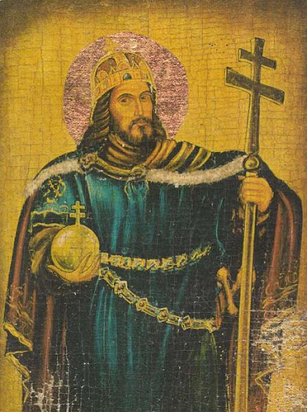

„Hoće li tko za mnom, neka se odreče samoga sebe, neka uzme svoj križ i neka ide za mnom.” (Mt 16,24)

Sveti Stjepan I., rođen oko 975. godine kao Vajk, bio je sin velikog ugarskog kneza Géze. Od malih nogu odgajan u kršćanskom duhu, već je kao mladić pokazivao iznimnu hrabrost i mudrost. Nakon očeve smrti 997. godine, Stjepan je preuzeo vodstvo nad ugarskim plemenima, suočen s izazovom ujedinjenja razjedinjenih poganskih rodova i obrane novonastale države od snažnih njemačkih susjeda koji su težili podjarmiti Ugarsku. U toj borbi za opstanak, Stjepan je pokazao izvanredne vojne i diplomatske sposobnosti, uspješno odbivši napade i osiguravši neovisnost svoga naroda.
Krunidba svetog Stjepana I. za kralja Ugarske održana je na Božić 1000. godine u Ostrogonu, a krunu mu je poslao papa Silvestar II. Ovaj događaj označio je ne samo političko, već i duhovno rođenje ugarske države. Stjepan je bio svjestan da snažna država mora imati i snažnu Crkvu, pa je odmah nakon krunidbe započeo s temeljitom organizacijom crkvenog života. Osnovao je deset biskupija, podigao brojne crkve i samostane, te uveo crkvenu organizaciju po uzoru na zapadnu Europu. Njegovim zalaganjem, kršćanstvo je postalo državna religija, a Ugarska je postala dio kršćanske zajednice europskih naroda.
Osim crkvene organizacije, Stjepan je reformirao i zakonodavstvo, uvodeći zakone koji su štitili siromašne, udovice i siročad. Njegov zakonik, poznat kao "Prva knjiga zakona", svjedoči o njegovoj brizi za socijalnu pravdu i red u društvu. Stjepan je bio i mecena umjetnosti i kulture, potičući gradnju crkava i samostana koji su postali središta pismenosti i umjetničkog stvaralaštva. Njegova vladavina bila je razdoblje mira, stabilnosti i prosperiteta za Ugarsku, a njegov doprinos u stvaranju države i širenju kršćanstva bio je neprocjenjiv. Preminuo je 15. kolovoza 1038. godine, a već 1083. godine proglašen je svetim. Njegovo tijelo počiva u bazilici svetog Stjepana u Budimpešti, a štuje se kao zaštitnik Ugarske i jedan od najvećih vladara u europskoj povijesti.